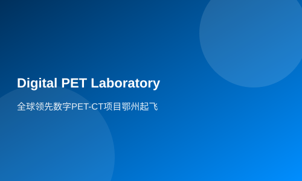

The world's leading digital PET-CT project takes off in Ezhou
Hubei Daily reports (by reporter Jiang Hui, correspondent Xia Xin, intern Chi Ke): How long does it take for a research achievement to move from the laboratory to industrialization? In Wu Tonghu New District of Ezhou City, the Huazhong University of Science and Technology Digital PET-CT team has given an answer that is somewhat 'exaggerated': 3 days.
It was learned from the Provincial Party Committee Talent Office yesterday that the Ezhou PET-CT project has been selected as one of the first batch of 'Innovation and Entrepreneurship Strategic Teams' in our province, and will receive a grant of 500,000 yuan.
On September 4, 2015, the PET-CT project team visited Wu Tonghu New District for an inspection. They reached an agreement to move in within three days. The Ezhou municipal government departments swiftly completed all conditions proposed by the team: factory space, company registration, accommodation, food and other necessities.
With expedited approval processes and door-to-door services, seven days later, the Digital PET-CT team registered and established Hubei Rui Shi Digital Medical Imaging Technology Co., Ltd. in Ezhou City.
Early cancer detection is a common wish for both doctors and patients, and 'PET-CT' has such capabilities. Last September, the world's first fully digital 'Positron Emission Tomography and X-ray Computed Tomography Scanner (referred to as Digital PET-CT)' was successfully developed after 15 years of research by a team led by Professor Xie Qingguo from the Wuhan National Laboratory for Optoelectronics (WNLFO) and Huazhong University of Science and Technology School of Life Sciences. A panel of experts, headed by Academician Yu Mengsun of the Chinese Academy of Engineering, unanimously agreed that HUST's digital PET technology is at an international leading level. 'Currently, our company has successfully developed two prototypes and possesses the capability to produce 10 units annually,' said a member of the PET-CT project team. The team has signed agreements with hospitals such as Wuhan University People's Hospital for clinical trials. Clinical trials are expected to take one to two months, after which they will apply for registration certificates from the National Medical Products Administration (NMPA). 'The fastest time frame is within eight months when Hubei-made PET-CT can be launched into the market,' said a member of the team.
This instrument costing 15 million yuan integrates PET and CT to form a complete imaging system. 'Digital PET-CT represents the latest generation of medical imaging technology,' says Xie Qingguo. It can detect lesions as small as 2 millimeters, with detection accuracy more than twenty times that of conventional PET-CTs, achieving an accuracy rate over 90%, while radiation exposure is lower compared to traditional CT scans. A full-body examination takes only five minutes, half the time required by traditional equipment. The birth of this device marks a breakthrough in China's high-end medical instrument sector, with low costs and strong market competitiveness.
Link
3 Days for Relocation, 7 Days for License, Half a Year for Production
How Wu Tonghu Attracts Golden Phoenixes
Correspondent Xia Hanyuan Wang Shihui Reporter Jiang Hui
Wu Tonghu New District is located at the junction of Wuhan and Ezhou. Neither a high-tech zone nor an economic development area, why can it attract world-leading research achievements to settle down? 'With utmost sincerity and best policies, we create conditions for more outstanding talents and high-end projects to enter Ezhou,' said Li Bing, Secretary of the Ezhou Municipal Committee. The model of 3 days for relocation, 7 days for license, and half a year for production is being replicated across the city.
The 'Concierge' Model
On May 5th, at the entrance of Wu Tonghu New District Management Committee, on the left high wall was a very noticeable project progress chart that announced each project's progress, responsible persons, and the main leaders' mobile phone numbers; on the 13th, they visited Wu Tonghu again, where a brand new progress chart had been put up. 'We update our charts weekly; this is the rhythm of Wu Tonghu!' said an office staff member from the Management Committee with a smile. Since the PET-CT project was launched, relevant departments at the municipal level and the Management Committee have worked non-stop, taking no more than one day off per week, often working 'day and night' and '5+2'.
Where did their time go? Wu Tonghu New District Party Committee member and Economic Development Bureau Director Dong Jun said that they are doing everything possible to serve scientists and act as good 'store clerks'.
Since last year, Ezhou City has emulated the free trade zone system by delegating municipal authority, providing administrative services within the new district, accelerating approval procedures, and offering full-service, no-cost 'store clerk' style service for enterprises.
The Science and Technology Bureau provides comprehensive tracking services; the Development and Reform Commission guides project applications; the Human Resources and Social Security Bureau implements talent policies; the Finance Bureau ensures timely funding for projects; the Food and Drug Administration promotes registration of innovative medical devices; and the Health and Family Planning Commission assists in implementing clinical trials...
The 'cash machine' model
Lack of start-up capital is a major obstacle to many scientific research technology transfer efforts. Even the PET-CT project, which has promising financial prospects, is not exempt from this issue.
How do you solve the problem of lack of funds? Ezhou City boldly decided: the government would provide advance funding. The city decisively decided that Changda Company (a government investment and financing platform) would intervene early, injecting 30 million yuan in capital; the PET-CT project team contributed technology as equity, jointly establishing Hubei Rui Shi Digital Medical Imaging Technology Co., Ltd.
On October 27, 2015, Changda Company signed a pledge contract with the PET-CT project team. With assistance from the Municipal Science and Technology Bureau, they completed the pledge registration procedures through the Wuhan branch of the National Intellectual Property Administration.
Ezhou is planning that as long as the project team is ready, Changda Company can withdraw at any time.
Once the PET-CT project starts industrial production, it will still need more funds. In April, Ezhou City Rural Commercial Bank tailored a new product for Rui Shi Company—financial leasing. In the future, products produced by Rui Shi Company can be purchased by the city's rural commercial bank and then leased to hospitals at a fee. This not only solves the problem of insufficient funding for buyers but also promotes sales of the company's products while addressing the issue of capital recovery, achieving multiple benefits.
The 'boarding student' model
Carrying luggage, living in hotel-style apartments; holding meal cards, dining in canteens; every Friday, they can take a shuttle bus back to Wuhan... Before coming to Wu Tonghu New District, Dr. Fang Lei of the PET-CT team never imagined how convenient it would be to work here.
To accelerate project industrialization and race against time, Ezhou has provided the most convenient conditions and best services for the PET-CT team.
The PET-CT team rents workshops and factories; Wu Tonghu New District Management Committee specially provides 1 million yuan in special support funds to cover their rental fees, water and electricity expenses, and daily operational costs.
The Management Committee also solves the team's worries about food, accommodation, and transportation: issuing meal cards for the team, providing fully-furnished apartments, setting up a Wu Tonghu-Wuhan shuttle bus service, and picking up company employees three times a week.
Team technical backbone Yan Lifu said, 'Here, we only need to focus on research and development; everything else is taken care of.'
One month after the PET-CT project was established in Wu Tonghu, leaders from Huazhong University of Science and Technology came upon hearing the news and expressed their willingness to 'invest 100 million yuan to support the construction of the PET-CT project'.
'Open sesame' triggers a butterfly effect. The construction model of the PET-CT project has sparked a wave of cooperation between schools and cities in Ezhou.
On the 29th of last month, the Huazhong University of Science and Technology (Huake) Ezhou Institute of Industrial Technology was inaugurated in Ezhou, with the establishment of the Ruisi Research Institute to promote the settlement of related industries such as scintillation crystals and accelerators in the Wutong Lake New Area. On that day, 14 technology transfer projects from Huazhong University of Science and Technology, including 'Printable Mesoscopic Solar Cells' and 'Laser Surface Lifespan Extension Treatment Technology for Railways', were settled in the Wutong Lake New Area.